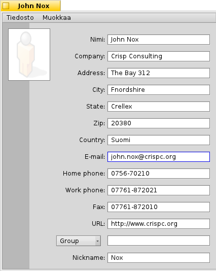
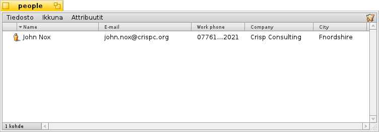

Suomi
Suomi Català
Català Deutsch
Deutsch English
English Español
Español Français
Français Italiano
Italiano Magyar
Magyar Polski
Polski Português
Português Português (Brazil)
Português (Brazil) Română
Română Slovenčina
Slovenčina Svenska
Svenska 中文 ［中文］
中文 ［中文］ Русский
Русский Українська
Українська 日本語
日本語 Ihmiset
Ihmiset
| Työpöytäpalkki: | ||
| Sijainti: | /boot/system/apps/People | |
| Asetukset: | ~/config/settings/People_data |
Ihmiset on yksinkertainen yhteystietotietokanta, joka käyttää Haikun tiedostojärjestelmän attribuutteja osoitteiden ja muiden yhteystietojen tallentamiseksi. Jokainen yhteystieto on tallennettu yhteen Person-tiedostoon, jossa tiedot ovat erillisissä attribuuteissa. Kaikki on indekstoitu ja siksi etsittävissä kyselyllä.
Ryhmä-attribuutti alhaalla sallii henkilön liittämisen yhteen tai useaan ryhmään. Se on hyödyllinen "massapostituksessa" lukuisille ihmisille, jotka esimerkiksi työskentelevät tietyssä hankkeessa. Ponnahdusvalikko tarjoaa kaikki parhaillaan olemassaolevan ryhmät. Jos henkilö kuuluu useampaan kuin yhteen ryhmään, ryhmänimet erotellaan merkillä ",".
Nämä Henkilö-tiedostot tallennetaan tavallisesti kansioon /boot/home/people/. Jos haluat luettelon kaikista yhteystiedoista, avaa vain sinun ihmiset-kansiosi ja näytä kaikki kiinnostavat attribuutit. Jos valitset Henkilö-tietojesi järjestämisen eri kansioon, käytä vain kyselyä niiden näyttämiseksi yhdessä ikkunassa.
Voit käsitellä näitä tiedostoja kuten kaikkia muita: Voit lajitella niitä attribuuttien mukaan (vieläpä toiseen lajittelujärjestykseen pitämällä VAIHTO-näppäin alhaalla samalla kun napsautat tiedostoa hiirellä) ja tietysti poistaa, tehdä kaksoiskappaleita tai nimetä uudellen Henkilö-tiedostoja. Jopa yhteystietoja voidaan muokata suoraan: Napsauttamalla attribuuttia (tai ALT- ja E-näppäimillä) muokkaaminen toimii aivan kuin tiedoston nimeämisessä. Heti kun olet muokkaustilassa, SARKAIN ja VAIHTO SARKAIN hyppäyttävät sinut sarakkeelta sarakkeelle.